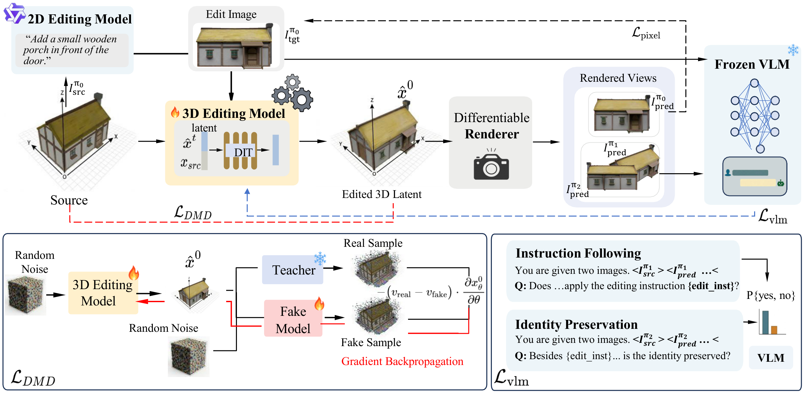

Project Page
Instruction-guided 3D editing is essential for interactive content creation, yet it faces a significant bottleneck: the severe scarcity of high-quality paired training data. Existing approaches attempt to bypass this by either relying on slow test-time optimization or training on pseudo-pairs constructed via complex pipelines, which often introduce structural drift and geometric artifacts. In this paper, we propose a novel framework that learns feed-forward 3D editing without paired 3D supervision via Generative Prior Distillation. Instead of relying on ground-truth 3D pairs, our core idea is to distill visual, semantic, and geometric knowledge from powerful foundation models directly into a 3D editing model. Specifically, through a differentiable rendering pipeline, we supervise the 3D representation using two complementary signals: a 2D visual prior from an image editing model at the main editing view, and a semantic prior from a Vision-Language Model at novel views to ensure strict instruction following and source identity preservation. Crucially, to address the geometric collapse and multi-view inconsistencies inherent in 2D projection supervision, we introduce a 3D-aware Distribution Matching regularization. Acting as a geometric prior, this term operates in the 3D latent space, constraining the edited output to remain within the manifold of realistic 3D assets defined by a pretrained image-to-3D teacher model. Extensive experiments demonstrate that our method achieves superior instruction fidelity and cross-view consistency, significantly outperforming state-of-the-art baselines.

Our editor predicts the edited 3D latent and is optimized via three complementary signals: (1) pixel-level reconstruction from a 2D editing teacher, (2) VLM-based semantic feedback for instruction following & identity preservation, (3) DMD-based 3D distribution matching to prevent geometric collapse.
360° turntable renderings of our editing results across various edit types.
Side-by-side comparison with state-of-the-art methods.
Visual comparison of model variants.